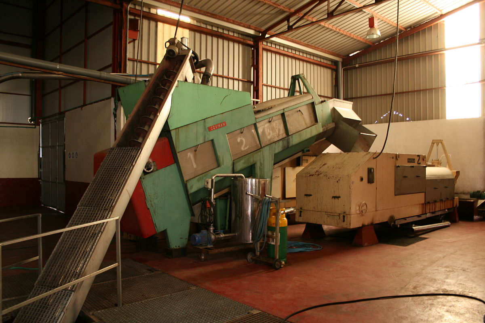
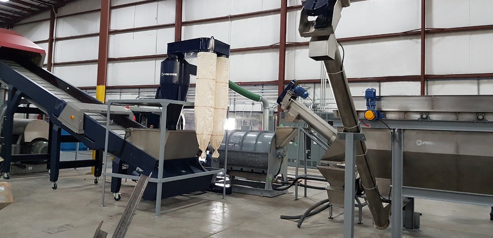
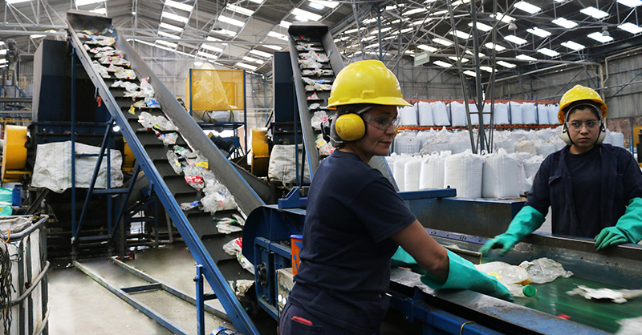
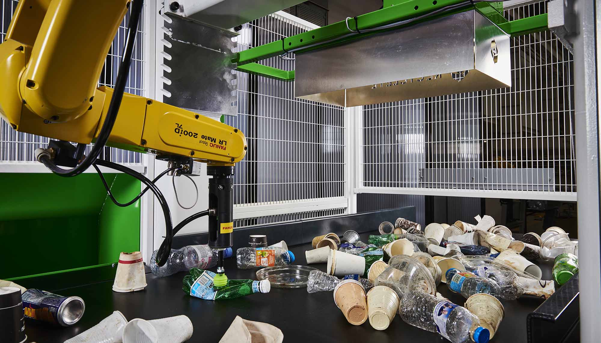
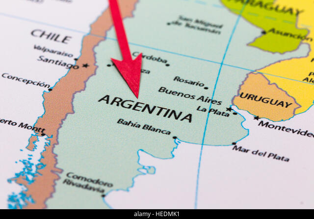
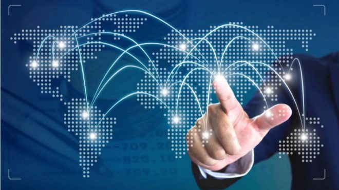

2013: Nuestro Nacimiento.
Nuestro CEO Eros Papiletu se desempeñaba ejerciendo un alto rol de Dirección en una de las mayores empresas de plástico de LATAM hasta que se le presento la oportunidad de comprar una trituradora de PET en desuso. Lucas no dudo en emprender en este nuevo camino y así comprar un galpón en la localidad de Mercedes donde iniciaría su sueño.

2015: Incorporación de Activos.
Luego de 2 años de crecimiento por parte de pedidos de clientes llego el momento de incorporar nuevas maquinarias que permitirían triplicar el reprocesamiento de plástico para que luego vuelva a la cadena productiva. Se incorpora una nueva trituradora de PET, una empacadora y derretidor.

2017: Ampliación de Planta Productiva.
En 2017 la compañía seguía en etapa de crecimiento por lo cual necesitábamos más colaboradores, operarios y también administrativos que acompañen a la continua expansión de RECICLARG es por esto que el galpón dejo de ser tal para ser una edificación dentro del mismo terreno.

2018: Incorporación de Activos.
En el año 2018 RECICLARG decidió ingresar a nuevos mercados de plástico reciclado laminado, alambre de PET, pellets de PET y también escamado lo cual permitiría estar en cada vertical del plastificado convirtiéndose asi en la planta de reciclaje más grande de Buenos Aires.

2019: Ampliación de Mercados Nacionales.
En 2019 se abrió una nueva planta en tierra del fuego lo cual permitía reprocesar plástico en desuso de la Patagonia junto con el beneficio impositivo de producir en dicha provincia.

2022: Expansión a Mercados Internacionales.
En 2022, post pandemia y junto con la colaboración de Europlastic, RECICLARG abre dos plantas nuevas esta vez fuera de Argentina. La primera en Rio de Janeiro y la segunda en Budapest donde nos convertimos en una Multinacional Intercontinental.
